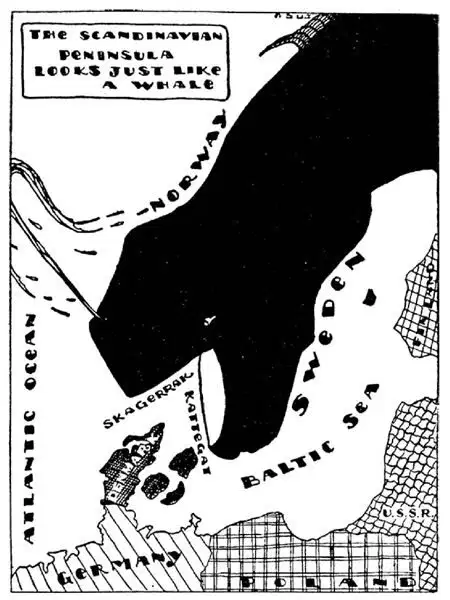

40
Fish, Fiords, Falls, and Forests
鱼儿、峡湾、瀑布和森林

HAVE you a good imagination? I mean, when there are clouds in the sky, can you see giants or galloping horses or rabbits with long ears or other things? Then look at the map on page 260 and tell me what it looks like:
Turn it on the side. Do you see what I see? A WHALE, with his mouth open, ready to swallow little Denmark. Skagerrack and Kattegat are the whale’s throat.
My geography calls this whale the “Scandinavian Peninsula”—that’s a big name, but then a whale is a big animal. The geography calls the back of the whale Norway, and it calls the other side Sweden. Norway plus Sweden equals Scandinavian Peninsula.
Perhaps the reason I thought of a whale was because there are so many real whales in the sea near Norway. Now a whale is the largest fish there is, you know, only it isn’t a fish. Fish lay eggs as chickens and birds do, only much smaller and many more, but a whale mother doesn’t lay eggs. She has babies as a cat has kittens. Besides, a whale has to have air to breathe and must come up to the top of the water as you would have to do if you were swimming under the water. A fish wouldn’t do that, for he couldn’t do that, so you see a whale is not a fish.
The whale eats little fish called herring, lots of them at one gulp, bones and all. There are millions, billions, trillions of herring in the sea, and millions, billions, trillions more than that. They live together in enormous crowds called “schools,” but one school of herring has more pupils than all the schools in the World; so, although the whales eat some herring, there are plenty of herring left for us to eat. The Norwegian people catch herring in nets, then they salt, smoke, or dry them to make sure they will keep almost forever without spoiling. Then they send these dried herring all over the World to be sold. I had a herring for breakfast this morning which may have been swimming round Norway years and years ago—it has been kept all that time.
I also ate a thousand eggs for breakfast this morning. That sounds impossible, but it’s really so—only they were not hen’s eggs, but herring eggs, for the mother herring carries her eggs inside of her—thousands of them. The herring’s eggs we call “roe.”

斯堪的纳维亚半岛看上去就像一头鲸
The seashore of Norway is not smooth and level like a bathing beach. There are mountains all along the edge right in the water and the sea fills the valleys between these mountains. These valleys filled with water are called “fiords.”
Norway is so far north we would expect the water in these fiords to be very cold in the winter; and we know what happens when water gets very cold—it freezes and turns to ice. But, strange to say, the water in these fiords does not freeze. The reason it doesn’t freeze is because the sun shines down on the water in the Gulf of Mexico, several thousand miles off. You may wonder what the Gulf of Mexico several thousand miles off has to do with Norway. Well, the boiler way off in my cellar heats the water in the pipes and that heats the radiator in the farthest room in my house. In the same way the sun heats the water in the Gulf as if it were a big boiler and from this Gulf a warm stream of water, called the Gulf Stream, flows as if it were a river in the ocean, all the way across the ocean from the Gulf of Mexico to the shore of Norway and warms the fiords. In the warm water of the fiords the herring schools have a fine recess until a whale or a fisherman comes along.
The northest city in the World is in Norway and the name of this city ends in est , too. It is Hammerfest . The Gulf Stream seems to end at Hammerfest and it dumps on the shore sticks of wood, some of which have floated like toy boats in a river all the way from the Gulf of Mexico. The people gather this “driftwood” and use it to make fires. Ordinary wood burns with a yellow flame, but wood that has drifted for a long time in the sea-water gets filled with salt from the water and when dried and burned gives off flames colored blue and green and purple, so that driftwood makes especially beautiful fires in open fireplaces.
You have probably tasted cod-liver oil—and hated it—but you were told it was very good for you, and it is. The cod is a much bigger fish than the herring, but of course not nearly as big as the whale. One of the playgrounds of the cod is near Norway, round some islands called “The Lofodens.” Fishermen catch shiploads of cod, press the oil out of their livers, and bottle it for your good health. The bones of the cod they have no use for, so they take them out—and this is quite a job, for there are a great many—and then they dry the flesh of the cod to make food. Here is a sentence that sounds funny unless you put in a period where it belongs, and then it makes perfect sense: “A codfish was swimming round the Lofoden Islands a month after all its bones had been taken out.” Where would you put the period to make sense?
【中文阅读】
你的想象力丰富吗？我是指，当天上有云朵时，你能看出是巨人？飞奔的骏马？耳朵长长的兔子？或是看见其他东西？请看下面的地图，然后告诉我它看起来像什么？
把地图转个方向，有没有看出我所看到的东西？一头鲸，张着大嘴，正要吞下小小的丹麦，“斯卡格拉克和卡特加特”就是它的咽喉。
在我的地理知识里，这条鲸叫“斯堪的纳维亚半岛”——这个名字够大的，不过鲸鱼也是大动物哦。从地理位置上看，“鲸”的背是挪威，另一边是瑞典。挪威加上瑞典等于斯堪的纳维亚半岛。
我之所以觉得它像一头鲸，也许是因为在挪威附近的海域真的有许多鲸。鲸现在是世界上最大的鱼，不过，你要知道，它并不是鱼类。鱼类，像鸡和鸟一样也会下蛋，只不过下的蛋小得多而又多得多，但鲸妈妈不会下蛋，鲸妈妈像猫妈妈生小猫一样生自己的小宝宝。而且，鲸还一定得浮出水面来呼吸空气，就像你游泳时不得不做的那样。而鱼是不会那样做的，因为鱼也做不到，所以，你就知道鲸不是鱼。
鲸吃一种叫“鲱鱼”的小鱼，鲸一口能吞下很多鲱鱼，连骨头带肉全吃掉。海洋里有亿万条数也数不过来的鲱鱼。通常一大群鲱鱼生活在一起，这一 大群在英语里叫“school” [1] ，但是一个“学校”的鲱鱼比全世界所有学校的学生加起来的总数还要多，所以，尽管鲸吃掉了一些鲱鱼，还是留下了足够多的鲱鱼让我们享用。挪威人用网打捞鲱鱼，然后，用盐腌制、用烟熏制、或晒干风干，用各种方法保存鲱鱼，确保长期不变质，他们再将鲱鱼干出口到世界各地。今天早餐我还吃了一条，说不定这条鲱鱼好多年前就在挪威附近海域游来游去——它一直被保存了到现在。
今天的早餐，我还吃了一千只蛋。听起来你会觉得这是不可能的，但确实如此——不过不是鸡蛋，而是鲱鱼的“蛋”，因为鲱鱼妈妈肚子里有很多蛋——有成千上万只，我们称鲱鱼的蛋为“鱼卵”。
挪威的海岸不像一般海滩那样平整，不能做浴场，岸边的山直接矗立水中，所以山谷里满是海水，这些充满了海水的山谷我们称之为“峡湾”。
挪威地处遥远的北方，我们常常猜想这些峡湾里的海水在冬季一定非常寒冷；而且我们还知道，当水很冷的时候会发生什么事情——水会凝固，结成冰。但是，奇怪的是，这些峡湾里的水却不会结冰。不结冰的原因是因为阳光照射在几千英里之外的墨西哥湾的海水中。你也许感到很惊讶，几千英里之外的墨西哥湾和挪威有什么关系呢？让我打个比方吧，虽然我家的锅炉装在地窖，但烧了锅炉就加热了管道中的水，即使离地窖最远的房间也能有暖气。同样道理，太阳照射在墨西哥湾中的海水上，海水升温，墨西哥湾就像只大锅炉，加热了海湾里的水，形成一股暖流，叫做“湾流”，就像是海洋里的一条河，从墨西哥湾出发，穿过大洋，一直来到挪威海岸，温暖了峡湾。峡湾温暖的水域就成了大群鲱鱼的安乐窝，直到鲸或渔民的到来。
世界上最北方（northest）的城市就在挪威，而且城市的名字也是以“est”结尾，叫“哈墨弗斯特（Hammerfest）”。墨西哥湾流抵达挪威的地点就在哈墨弗斯特。湾流将一些木头枝条推到岸上，这些木头枝条有的就像是小河里的玩具船一样一路从墨西哥湾漂流到这儿。挪威人将这些漂流木收集起来烧火用。普通木头燃烧会发出黄色的火焰，而这些在海水中漂流了很长时间的木头因吸收了海水中的盐，干燥后燃烧会发出蓝色的、绿色的和紫色的火焰，所以，漂流木在敞开的壁炉里可以燃起美丽的火焰。
你很可能尝过鱼肝油，那种味道你肯定不喜欢——但是，别人会告诉你，鱼肝油有益你的健康。也确实如此。鳕鱼是一种比鲱鱼大得多的鱼，但是决不 会和鲸那样大。鳕鱼活动场所之一就在挪威的罗佛敦群岛周围。为了你们的健康，渔夫捕捞整船整船的鳕鱼，从鳕鱼的肝脏提取鱼肝油装在瓶子里。鳕鱼的骨头没有什么用，所以他们把鱼骨全部剔除——这不是件容易的事，因为骨头太多了——然后将鳕鱼肉晒干或风干制成鱼肉干当食物。这儿有一个句子，非常有趣。不过，你得在适当的位置加上一个句号，这个句子才能讲得通。“一条鳕鱼在罗佛敦群岛游啊游一个月后它所有的骨头都被剔除了。”你会在哪儿加一个句号使这个句子有意义呢？